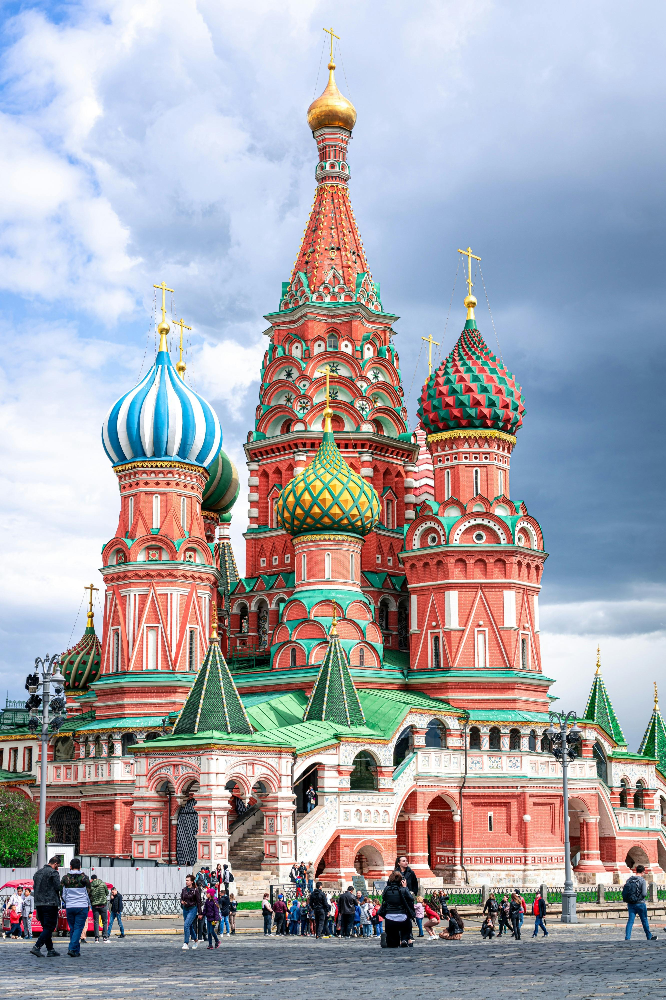
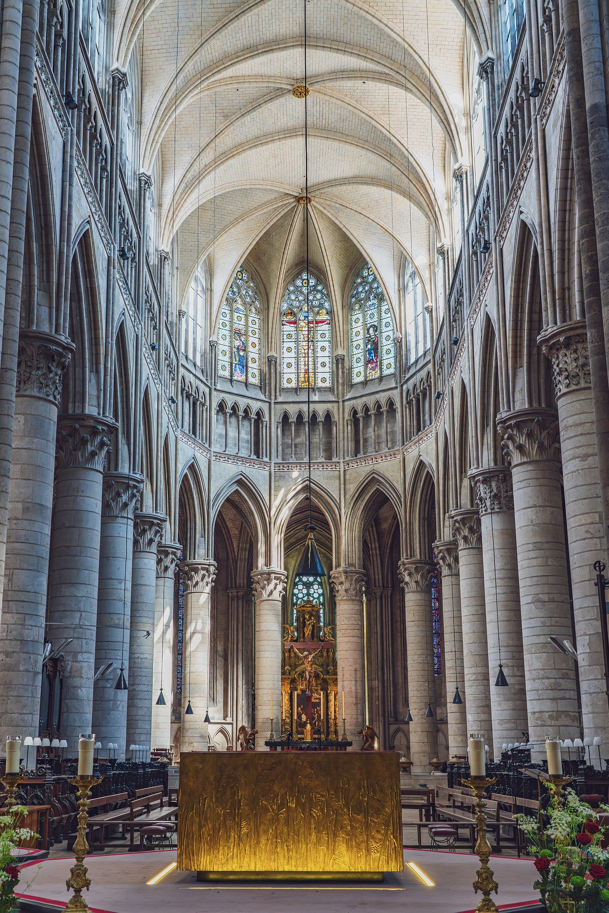
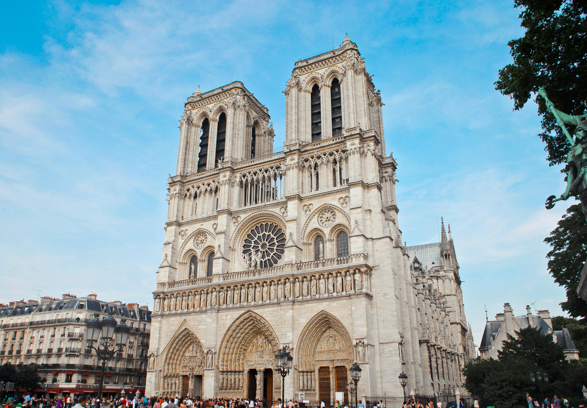
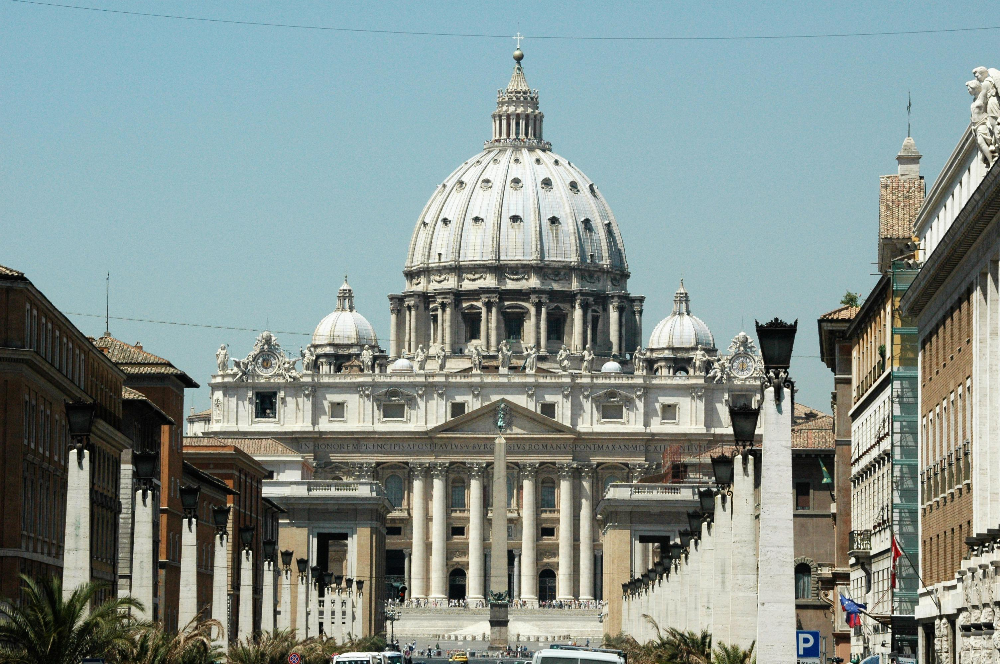

Famous Cathedrals Around the World
Rouen-Cathedral (France)
Notre Dame-Cathedral (France)
St. Basil-Cathedral (Russia)
Sagrada Familia (France)
St. Peter's Basilica (Vatican)
Login
Username
Password
Login
St. Basil's Cathedral

Back to Top
Rouen-Cathedral

Back to Top
Notre-Dame

Back to Top
Sagrada Familia
Back to Top
St. Peter's Basilica

Back to Top
References
Pexels
The bells toll